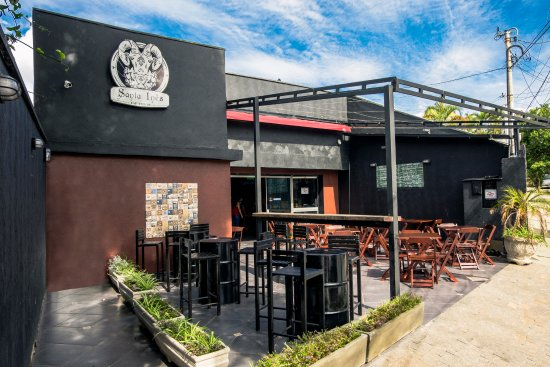

Me chamo Matheus Fonseca Soares Pinto, tenho 23 anos e estou cursando Desenvolvimento Web no IOS (Instituto de Oportunidade Social). Decidi entrar nesse curso pois me interesso na área e gostaria de trabalhar nela.
Sempre estudei em escola pública, entrei na faculdade com o ENEM, e hoje sou formado em Produção
Audiovisual pela UNIP, Durante o ano de 2019 trabalhei como editor de vídeo, faziia edições de
campeonatos de futebol de base e escolinhas, hoje trabalho como freelancer e período integral na Kantar
Ibope Media, que é ligada ao conteúdo audiovisual.
Moro no Jardim Peri, com meus pais e meu irmão mais velho, que é chefe de cozinha em uma hamburgueria na
Avenida Santa Inês, a Santa Inês
Tap House
(Só pra fazer o merchan mesmo).

Curiosidades
- Namoro a 1 ano e 1 mês;
- Tenho 2 tatuagens:
- A primeira fiz com 19 anos, e é da minha gata dentro do raio do Flash, eu que desenhei a tatuagem. Significa que gosto do Flash e amava minha gata, ela morreu em 2020, ano que ela completaria 17 anos.
- A segunda fiz com 20 anos, são 3 flores: rosa, orquídea e antúrio. Sempre gostei de tatuagem de flor e queria fazer, então perguntei pra minha avó as flores que ela mais gostava;
- Fui campeão paulista Sub 11 jogando pelo Pequeninos do Meio Ambiente, onde jogava como volante;
- Conheci o Gabriel Jesus, treinávamos juntos, mas jogamos em categorias diferentes, pois sou 00 e ela 97;
- Eu nasci com sopro no coração e com 13 anos precisei fazer uma cirurgia;
- Fiquei 5 anos sem poder fazer atividade física por conta da cirurgia, e por isso acabei ficando mais tempo no computador e me apaixonei pelo audiovisual.